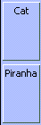
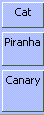
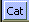
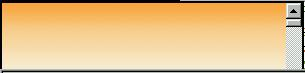
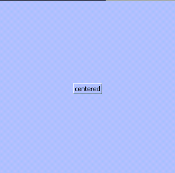

The draft describes a CSS box model optimised for interface design.
This document is not yet a working draft of the CSS
working group which is part of the Style activity. It contains a
proposal for features to be included in CSS level 3.
Feedback is very much welcomed. Comments can be sent directly
to the editor, but the mailing list www-style@w3.org
(see instructions)
is also open and is preferred for discussion of this and other
drafts in the Style area.
This working draft may be updated, replaced or rendered
obsolete by other W3C documents at any time. It is inappropriate
to use W3C Working Drafts as reference material or to cite them as
other than "work in progress". Its publication does not imply
endorsement by the W3C membership or the CSS Working Group (members
only).
A list of current W3C Recommendations and other technical
documents including Working Drafts and Notes can be found at http://www.w3.org/TR.
[an error occurred while processing this directive]
Overview
Boxes lay out their children using a constraint-based system that
supports both relative flexible sizing and intrinsic sizing.
In CSS, an inline box can be specified using the 'display' property with a value of inline-box. A block-level box can be specified with
a value of box.
The difference between boxes and blocks is in how the children of
the element are laid out. Children of boxes are all block-level
(inline-level contents get wrapped in anonymous blocks, as described
in the section on inlines and blocks).
These blocks then get stacked in the direction specified by the 'box-orient' and 'box-direction' properties. They are aligned
within the box according to the 'box-align' property. The boxes may then flex
or be distributed as specified by the 'box-flex', 'box-flex-group' and 'box-pack' properties.
These properties, and a few others, are described below.
The 'float' property does not apply
to children of box elements.
Orientation and Direction
'box-orient'
| Value: |
horizontal | vertical | inline-axis | block-axis |
| Initial: |
inline-axis |
| Applies to: |
box elements |
| Inherited: |
no |
| Percentages: |
n/a |
| Media: |
visual |
| Computed Value: |
specified value |
Box containers have an orientation and a
direction. The 'box-orient'
CSS property specifies the orientation of the box. It has values of
horizontal, vertical, inline-axis,
block-axis, and inherit. A horizontal box lays out its children in
a horizontal line, and a vertical box stacks its children
vertically. The inline and block axes are the writing-mode dependent
keywords which, in English, map to horizontal and vertical
respectively.
'box-direction'
| Value: |
normal | reverse |
| Initial: |
normal |
| Applies to: |
box elements |
| Inherited: |
yes |
| Percentages: |
n/a |
| Media: |
visual |
| Computed Value: |
specified value |
The 'box-direction' CSS property
specifies the direction of the box. It has values of normal and reverse. A
normal horizontal box lays out its children from left to right, and a
normal vertical box lays out its children from top to bottom.
Direction within nested boxes is inherited by default. If
direction and orientation are omitted on the outermost box in a box
group, it is assumed to have a inline-axis orientation and normal
direction.
<box>
<button>Child 1</button>
<button>Child 2</button>
</box>
When items are placed in a box without specifying any additional
information about their size, then the box sizes the children
intrinsically. In other words, the box makes each child
only as big as it needs to be.
Notice that in the above example, the two buttons
are only as big as they need to be to display all of their text.
Widths can be specified for items inside a horizontal box. When an
object specifies its width in CSS, it is telling the box that it would
like to be that width. Similarly, heights can be specified in CSS for
items in a vertical box. An unnested box placed inside an enclosing
CSS block will obey all the usual sizing rules of the block. For
example, setting the width of an unnested box to 100% ensures that the
box is the maximum width permitted by the enclosing CSS block
(ignoring any margins, border and padding on that box).
<box>
<button style="width: 200px">Child 1</button>
<button style="width: 100px">Child 2</button>
</box>
In this example, the first child is twice as wide as the second
child, since it specified a width of 200 pixels. The second child
specified a width of only 100 pixels.
'box-sizing'
| Value: |
content-box | padding-box | border-box | margin-box |
| Initial: |
content-box |
| Applies to: |
box and block elements |
| Inherited: |
no |
| Percentages: |
n/a |
| Media: |
visual |
| Computed Value: |
specified value |
The 'box-sizing' property determines
how the 'height' and 'width' properties should be interpreted.
- content-box
- This is the behavior of width and height as specified by CSS2. The specified width and height apply to the width and height respectively of the content box of the element. The padding and border of the element are laid out and drawn outside the specified width and height.
- padding-box
- The specified width and height on this element determine the padding box of the element. That is, any padding specified on the element is laid out and drawn inside this specified width and height. The content width and height is computed by subtracting padding widths of the respective sides from the specified width and height. The padding-box size is the dimension used for the containing block of absolutely positioned blocks.
- border-box
- The specified width and height on this element determine the border box of the element. That is, any padding or border specified on the element is laid out and drawn inside this specified width and height. The content width and height is computed by subtracting the border and padding widths of the respective sides from the specified width and height. This is the behavior of width and height as commonly implemented by legacy HTML user agents for replaced elements and input elements.
- margin-box
- The specified width and height on this element determine the margin box of the element. That is, any margin, padding or border specified on the element is laid out and drawn inside this specified width and height. The content width and height is computed by subtracting the margin, border and padding widths of the respective sides from the specified width and height. When margins collapse, the height (or width, for horizontal block layout) is calculated before applying any collapsing algorithms. Authors should be aware of this, as it can lead to unexpected results.
Note that despite the name of the property, 'box-sizing' applies to block and table-level
elements as well as boxes.
Alignment
'box-align'
| Value: |
start | end | center | baseline | stretch |
| Initial: |
stretch |
| Applies to: |
box elements |
| Inherited: |
no |
| Percentages: |
n/a |
| Media: |
visual |
| Computed Value: |
specified value |
The 'box-align' property specifies
how a box's children are aligned along the orientation of the box. Its
possible values are start, end, center, baseline, and stretch. The
initial value is stretch.
The following rules should be applied when determining the size of
children inside boxes in the dimension opposite to the orientation of
the box. Exceptions to these rules are noted under each of the
possible values of 'box-align' below.
All normal flow children of boxes will attempt to satisfy the
following sizing equation when placed inside vertical boxes if and
only if at least one of the specified values is auto:
'margin-left' + 'border-left-width' + 'padding-left' + 'width' +
'padding-right' + 'border-right-width' + 'margin-right' = width of
containing box
and a similar equation for height when placed inside horizontal boxes:
'margin-top' + 'border-top-width' + 'padding-top' + 'height' +
'padding-bottom' + 'border-bottom-width' + 'margin-bottom' = height of
containing box
If all the values in the equation are specified (i.e., if there are
no auto values), then the equation above does not apply, and the
specified values should be used. If applying the equation results in a
negative value for width/height, then that value is set to 0, and
those values should be used.
If the value of 'box-align' is stretch, then elements obey the sizing rules
specified above. This is the default value. If both width/height and
one or both margin values are 'auto', the 'auto' margins are set to 0
and the equation is used to find a value for width/height. Otherwise,
if both margins are 'auto', then the equation is solved under the
additional constraint that the two margins must get the same
value. If only one value is 'auto', the equation is solved.
If the value of 'box-align' is start,
center, baseline, or end, and a value of 'auto' is specified for
width/height, then the intrinsic size of the element should be used.
If a margin has the value of auto, then the equations above should be
used. If both margins have a value of auto then the above equations
should be used, with the space being divided evenly between the two
margins. These rules are similar to the rules for replaced elements
inside blocks.
Once the sizes are computed, the margin boxes of the elements
should be aligned at the start, center, baseline, or end of the box.
For horizontal boxes, this typically means the top, center, baseline
or bottom of the box. For vertical boxes, the start and end alignments
depend upon the direction. For LTR, the elements would be aligned at
the left side of the box for start and the right side for end. For
RTL, the elements would be aligned at the right of the box for start
and the left side for end.
If the value of 'box-align' is baseline,
then the elements should then be aligned along their baselines. For
block flows, use the baseline of the first non-empty line box located
within the element. For tables, use the baseline of the first cell.
The children, once aligned on their baselines, should then be placed
into the box so that the child with the earliest extent margin has its
before margin edge flush with the before edge of the box's content
area (i.e. the children, once aligned on their baselines, should then
be placed into the box so that the child with the highest top margin
has its top margin edge flush with the top edge of the box's content
area). If the box does not have an 'auto' height, overflow will always
be on the after (bottom) edge.
If the box orientation is block-axis, then baseline is interpreted as center.
Flex
[This section needs to more accurately explain how it
works with box-lines, box-align, etc.]
Items in boxes fall into two categories: flexible and
inflexible. Inflexible objects will not grow, even when
there is extra space left over in the box.
<box style="width: 400px;">
<button style="width: 200px">Child 1</button>
<button style="width: 100px">Child 2</button>
</box>
'box-flex'
| Value: |
<number> |
| Initial: |
0.0 |
| Applies to: |
children of box elements |
| Inherited: |
no |
| Percentages: |
n/a |
| Media: |
visual |
| Computed Value: |
specified value |
An object becomes flexible when the box-flex CSS property is specified for an element.
box-flex has a floating point value
representing the flexibility of the object. Its default value is 0,
which indicates that the object is inflexible. Objects that are
flexible can shrink or grow as the box shrinks and grows. Whenever
there is extra space left over in a box, the flexible objects are
expanded to fill that space. All flex is relative. For example, a
child with a flex of 2 is twice as flexible as a child with a flex of
1.
<box style="box-orient: vertical; height: 200px">
<button>Cat</button>
<button style="box-flex: 1">Piranha</button>
<button>Antidisestablishmentarianism</button>
</box>

In the above example, the box is 200 pixels tall, which is more
than enough room for the three buttons. Because the first and third
buttons are inflexible, they remain the same size as in the previous
example. The second button is specified as being flexible, and because
it is the only flexible object in the box, it receives all of the
extra space.
When several objects in a box are flexible, the extra space is
divided among the objects based on how flexible they are. The box
determines how much space to give an object by adding up the flex
values on all of its children. An object gets an amount of extra space
equal to the percentage of flex that it is responsible for.
For example, if two objects have a flex of 1, then after both
objects are given their preferred sizes, the first object gets 1/(1+1)
= 1/2 of the extra space, and the second object also gets 1/2 of the
extra space.
<box style="box-orient: vertical; height: 200px">
<button style="box-flex: 1">Cat</button>
<button style="box-flex: 1">Piranha</button>
</box>

Here is another example using objects with different flex values.
<box style="box-orient: vertical; height: 200px">
<button style="box-flex: 1">Cat</button>
<button style="box-flex: 2">Piranha</button>
<button style="box-flex: 3">Canary</button>
</box>

Preferred, Minimum, and Maximum Sizes
For inflexible objects, the specification of the 'width' and 'height' CSS properties can be used to specify
an object's size. If these properties are omitted (and thus have tho
value auto), an inflexible object will be
sized intrinsically, i.e., it will be given the minimum amount of
space required to lay out the item without unnecessary line breaks
(also known as the maximum intrinsic width).
<outer-box> outer-box { display: box; width: 12em;
<inner-box/> box-orient: horizontal; }
<inner-box/> inner-box { display: box; width: 10em; }
</outer-box>
This would result in the two inner boxes overflowing the outer box
on the right hand side by 8em.
The 'overflow' property controls how
boxes are rendered when their contents are wider (or taller) than
themselves.
With flexible objects, there are more options. Just as with
inflexible objects, the 'width' and
'height' properties can be used to
specify a preferred size. However, unlike inflexible objects, this
size is only a guideline. A flexible object will stretch as
necessary. It will also shrink if required until it can shrink no more
(e.g., when the object hits its minimum required intrinsic size).
<box style="box-orient: vertical">
<button style="box-flex: 1; height:1000px">
Cat
</button>
</box>

In the above example the box is shrinking, and despite the
specification of 1000 pixels as the preferred height, the button,
because it is flexible, shrinks with the box. It continues to shrink
until the minimum required height for the button is reached. After
that, the button can shrink no further. If the box were to continue to
shrink, the button's contents would be clipped, and a portion of the
button would no longer be visible.
Items within a box can therefore have their own notions of minimum
and maximum intrinsic sizes. In the above example, the button could
not get any smaller than the minimum height required to draw its
borders and its text.
For a more fine-grained control of minimum and maximum sizes, the
'min-width', 'min-height', 'max-width', and 'max-height' CSS properties can be used. When
specified, these properties provide extra information to the box as it
shrinks and grows the object in question.
In a horizontal box, for example, if a minimum width is specified,
then the flexible object will not be allowed to shrink below that
width. If a maximum width is specified, then the flexible object will
not be allowed to grow beyond that width.
<box style="box-orient: vertical">
<iframe style="box-flex: 1; min-height:100px; max-height:300px;
width:300px"
src="http://www.mozillazine.org/"/>
</box>

The above example demonstrates the use of 'min-height' and 'max-height' within a vertical box. In the
first image the box has been shrunk until it is smaller than 100
pixels in height. Because the iframe has a specified minimum height of
100 pixels, it is not allowed to shrink any further, and so as the box
falls below 100 pixels, the iframe gets clipped, and portions of it
become invisible.
In the second image, the box has been expanded past 300 pixels in
height. Even though the box is getting bigger, the extra space is not
being consumed by the iframe, because its maximum height of 300 pixels
has been reached. It will grow no further.
Below is another example illustrating min and max width.
<box>
<button style="box-flex: 1; max-width: 50px">Child 1</button>
<button style="box-flex: 1; min-width: 50px">Child 2</button>
</box>
In the above example, the box has been stretched so that it is very
wide. The first child has a maximum width of 50 pixels, and it divides
the excess space equally with the second child until its maximum width
has been reached. After that, since it is not allowed to grow any
further, the remaining space all goes to the second child.
Packing Controls
'box-pack'
| Value: |
start | end | center | justify |
| Initial: |
start |
| Applies to: |
box elements |
| Inherited: |
no |
| Percentages: |
n/a |
| Media: |
visual |
| Computed Value: |
specified value |
When all of the items within a box are inflexible or when all
objects have grown to their maximum sizes and can stretch no further,
extra space may be left over in the box. An additional property can
be used to dictate how any additional space should be distributed
between objects. The CSS property 'box-pack' has the possible values of start, end, center and justify. The
default is justify.
<box style="box-align: center; box-pack: center;
width: 300px; height: 300px">
<button>centered</button>
</box>

In the above example, the button is centered within the box using the 'box-align'
and 'box-pack' properties together. The former centers the button vertically, and
the latter centers the button horizontally.
Flex Groups
'box-flex-group'
| Value: |
<integer> |
| Initial: |
1 |
| Applies to: |
children of box elements |
| Inherited: |
no |
| Percentages: |
n/a |
| Media: |
visual |
| Computed Value: |
specified value |
Flexible objects can be assigned to flex groups using
the 'box-flex-group' property. This property
is a natural number value (with 1 being the first flex group). The
default value is 1.
When a box needs to expand flexible objects, it will expand all
objects in the lowest-numbered flex group first. Only when all
objects have hit their maximum sizes will objects from the next flex
group be processed. Similarly, when a box shrinks objects, it starts
shrinking objects in the highest specified flex group, moving to
lower-numbered groups as objects begin hitting their minimum
sizes.
The scope of this property is the box (the parent element).
Multiple Lines
'box-lines'
| Value: |
single | multiple |
| Initial: |
single |
| Applies to: |
box elements |
| Inherited: |
no |
| Percentages: |
n/a |
| Media: |
visual |
| Computed Value: |
specified value |
By default a horizontal box will lay out its children in a single
row, and a vertical box will lay out its children in a single column.
This behavior can be changed using the box-lines property. The default
value is single, which means that all objects will always be placed in
a single row or column, and any objects that don't fit will simply be
considered overflow.
If a value of multiple is specified, however, then the box is
allowed to expand to multiple lines (that is, multiple rows or
columns) in order to accommodate all of its children. The box must
attempt to fit its children on as few lines as possible by shrinking
all objects down to their minimum widths if necessary.
If the children still do not fit on a line after being reduced to
their minimum widths, then children are moved one by one onto a new
line, until the objects remaining on the previous line fit. This
process can repeat to an arbitrary number of lines. If a line contains
only a single object that doesn't fit, then the object should stay on
that line and overflow out of the box.
One the number of lines has been determined, objects with box-flex
specified flex up to their max widths in an attempt to fill the
remaining space on the lines. Each line computes flexes independently,
so only objects on that line are considered when evaluating flex and
flex-groups.
Ordinal Groups
'box-ordinal-group'
| Value: |
<integer> |
| Initial: |
1 |
| Applies to: |
children of box elements |
| Inherited: |
no |
| Percentages: |
n/a |
| Media: |
visual |
| Computed Value: |
specified value |
Children of a box element can be assigned to ordinal
groups using the 'box-ordinal-group'
property. This property is a natural number value. The default value
is 1.
Ordinal groups can be used in conjunction with the 'box-direction'
property to control the order in which objects appear within a box.
When the specified direction is normal, a box will start with the
lowest numbered ordinal group and ensure that those objects appear to
the left (for horizontal boxes) or at the top (for vertical boxes) of
the container. Objects with the same ordinal group are flowed in the
order they were declared in the content model. An object of a lower
ordinal group will always appear before an object of a higher ordinal
group. In the reverse direction, the highest ordinal group appears
first, and the container positions objects from the highest group down
to the lowest.
Visibility
Items within a box can use the CSS 'visibility' property to render themselves
invisible. Boxes behave like tables in that the value collapsed can be used to specify that an item
within a box should not take up any space at all (just like display:none). Flexible objects expand as needed
to fill any space left open by a collapsed item.
Overflow
Items within a box may use the CSS 'overflow' property to obtain horizontal and
vertical scrollbars as needed. Flexible objects that shrink below
their minimum intrinsic size can display scrollbars using the auto value. If overflow is hidden, the object will be clipped
instead. Note that the initial value is visible, which is typically not the preferred
effect in user interfaces.
Inlines and Blocks
Like with 'block' elements, all children of 'box' elements are
block-level. If inline-level elements are nested inside boxes, they
get wrapped in an anonymous block which then takes part in the box
layout.
Boxes size the blocks inside them in much the same way as blocks.
In particular, width:auto means that the box
will fill the box's containing block. Similarly, the 'min-width', 'min-height', 'max-width', and 'max-height' CSS properties act the same on
boxes as on blocks.
Examples
This section will include some sample bindings and maybe even the source to one or two
complete dialog boxes.
Profiles
[This section explains what parts of this module belong in which profiles.]
We have at least 4 profiles: level 1, level 2, level 3 and full
[This section will contain acknowledgments]
References
Normative references
Other references
Index